С векторами вы встречались в курсе школьной физики, рассматривали вектор силы, вектор скорости.
Определение. Вектор — это направленный отрезок.
Обозначается вектор либо одной малой буквой латинского
алфавита со стрелкой или чертой сверху — a, a, либо двумя большими буквами
AB, AB,
первая из которых соответствует началу вектора, вторая — концу.
Определение. Длина вектора — это длина направленного
отрезка. Она обозначается |a|, |AB|
Определение. Векторы a и b называются равными, если они
расположены на одной прямой или на параллельных прямых, одинаково направлены и имеют одинаковую длину.
Таким образом, появляется понятие «свободный вектор».
ЭЛЕМЕНТЫ ВЕКТОРНОЙ АЛГЕБРЫ
Определение 1. Суммой векторов a и b называется вектор c (c = a + b), направленный по диагонали параллелограмма, построенного на векторах a и b и, выходящих из одной точки A, у которого начало совпадает с точкой A (рис. 1).
Определение 2. Пусть начало вектора b совпадает с концом вектора a. Суммой векторов a и b называется вектор c, начало которого совпадает с началом вектора a, а конец совпадает с концом вектора b (рис. 2).
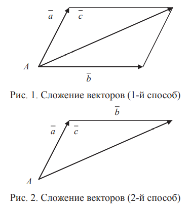
2. Вычитание векторов. Разностью векторов a и b называется вектор d (d = a - b), направленный по другой диагонали параллелограмма, построенного на векторах a и b , выходящих из одной точки, начало которого совпадает с концом вектора b, а конец совпадает с концом вектора a (рис. 3).
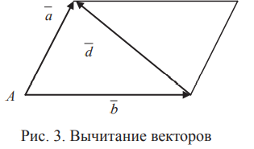
3. Умножение вектора на скаляр. Произведением вектора a на число λ называется вектор g (g = λ a), который расположен на прямой, совпадающей с вектором a либо параллельной вектору a, длина которого равна |λ| |a| и направление совпадает с направлением вектора a, если λ > 0, и противоположно направлению вектора a если λ < 0 (рис. 4).
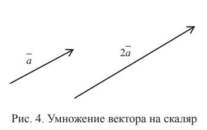
Векторы в прямоугольной системе координат
Вектор a расположим так, чтобы его начало совпадало с точкой O. Конец вектора a обозначим M. Координаты точки M (x, y) называют координатами вектора a и пишут a = (x, y). Очевидно, a = x i + y i , x называется проекцией вектора a на ось Ox, y называется проекцией вектора a на ось Oy. Через α обозначим угол между вектором a и осью Ox, через β обозначим угол между вектором a и осью Oy (рис. 5); cosα, cosβ называются направляющими косинусами вектора a
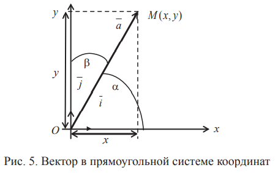
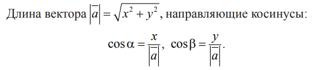
Пример 3.1. Задан вектор a = (√3, -1). Найти длину вектора a и направляющие косинусы.
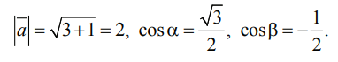
Операции над векторами
в координатной форме
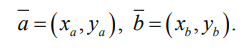
Тогда вектор суммы c = a + b имеет координаты
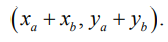
Вектор разности d = a - b имеет координаты
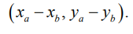
Вектор произведения g = λ a имеет координаты

Условие параллельности двух векторов
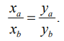
Пример 3.2. Заданы векторы a = (1, 2), b = (-1, -5). Записать эти векторы через орты. Найти длины сторон и длины диагоналей параллелограмма, построенного на векторах a и b .
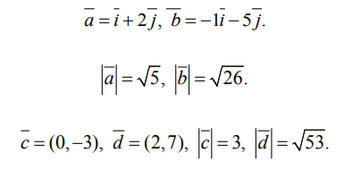
Координаты вектора через координаты
конца и начала
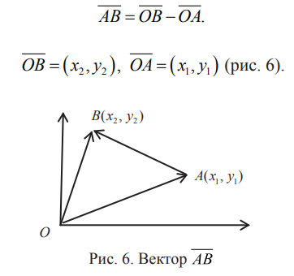
Поэтому
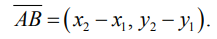
Правило. Чтобы найти координаты вектора, нужно из координат конца вектора вычесть соответствующие координаты начала.
Расстояние между двумя точками
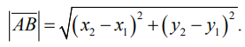
Координаты середины отрезка
Пусть C(xc, yc) — его середина (рис. 7).
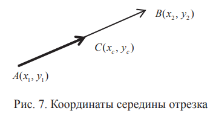
Вектор
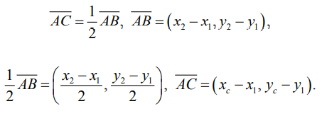
Отсюда
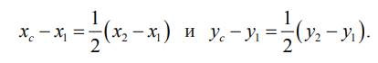
Теперь выразим xc и yc. Получим формулы для вычисления координат середины отрезка:
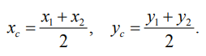
Пример 3.3 Найти расстояние r между точками A(1, 2) и B(−2, 6) и координаты середины отрезка AB.
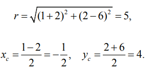
Скалярное произведение двух векторов

Определение. Если скалярное произведение двух векторов равно 0, то векторы ортогональны (перпендикулярны)
Скалярное произведение двух векторов
в координатной форме
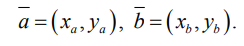
Справедливо такое равенство:
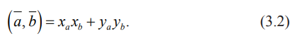
Замечание.Отсюда условие ортогональности двух векторов запишется в виде
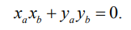
Угол между двумя векторами
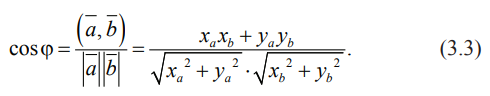
Пример 3.4. Заданы векторы
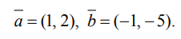
Найти угол между диагоналями параллелограмма, построенного на этих векторах
c = (0, -3), d = (2, 7) — векторы, идущие по диагоналям параллелограмма (c, d) = 0 * 2 + (-3)7 = -21, |c| = 3, |d| = √53.
Теперь найдем косинус угла между диагоналями параллелограмма:
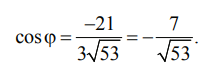
Замечание. До сих пор мы рассматривали векторы, лежащие на плоскости и имеющие две координаты. Но все записанные нами формулы справедливы и для пространственных векторов, имеющих три координаты.
Пусть
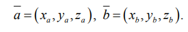
Тогда, например, формула (3.3) запишется так:
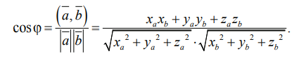
Векторное произведение двух векторов
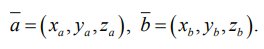
Определение. Векторное произведение двух векторов — это вектор h, перпендикулярный вектору a и вектору b, длина которого равна площади параллелограмма, построенного на векторах a и b, выходящих из одной точки A, и такой, что
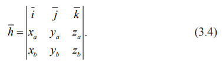
Из формулы (3.4) нетрудно найти координаты вектора h.
Пример 3.5. Заданы векторы a = (1, 2, 0), b = (-1, -5, 0). Найти площадь параллелограмма, построенного на векторах a и b, выходящих из одной точки A.
Найдем векторное произведение векторов a и b — вектор h. По формуле (3.4)
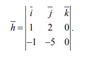
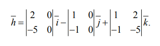
Вычислив определители второго порядка, найдем, что
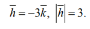
Поэтому площадь параллелограмма равна 3.